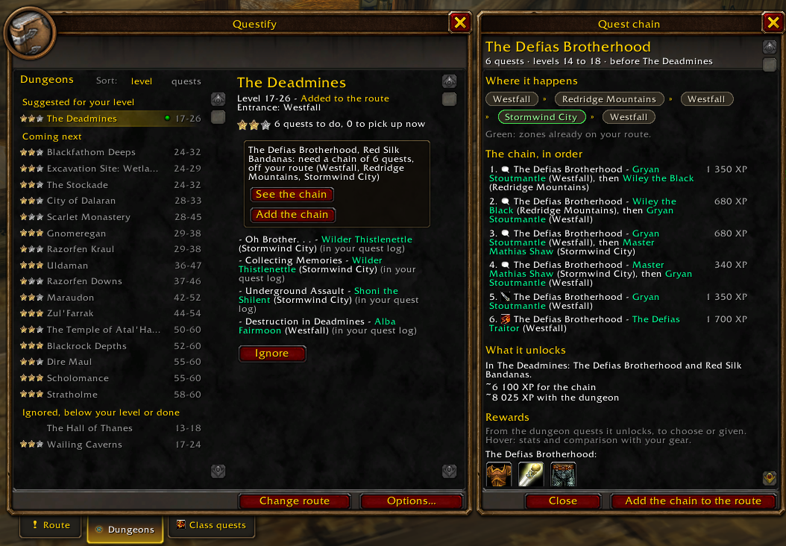
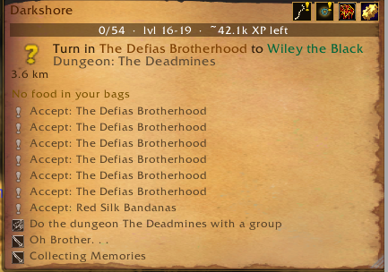

When dungeon quests need a chain of earlier quests off your route, the Dungeons tab offers it in one box, for every quest it unlocks.
“See the chain” opens an annex docked to the journal: the zones in order (green when already on your route), each step with its giver and XP, what it unlocks, and the rewards of the dungeon quests, with stats and comparison as in your bags.
One click adds it to your route, with the dungeon quests picked up right after.

